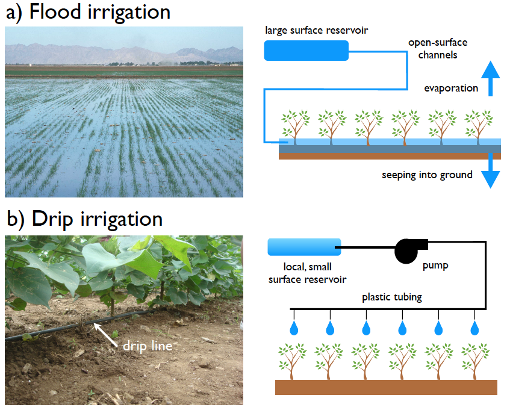
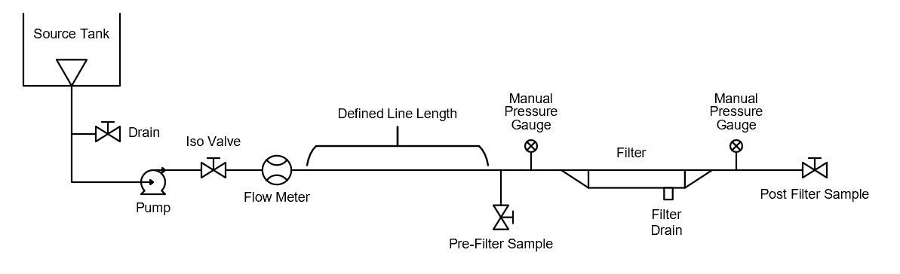
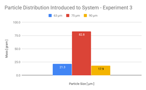

Low Pressure Drop Filtration Using Horizontal Settling Chamber
We designed and tested a horizontal settling chameber for drip irrigation in developing countries, and in particular, for drip irrigation systems.
Drip irrigation systems use pumps to pump water from a local water source through a pressurized network of plastic tubing installed along rows of crops. Drip emitters are located at every plant and allow water to be applied directly to the plant roots. Filters are typically required to remove impurities from the water that may potentially clog the small orifices of the drip emitters. Drip irrigation systems require higher pressure pumps - compared to flood irrigation, which only needs a low pressure pump (or none at all if water source has high head pressure) - in order to counteract all of the component pressure losses in the system. Drip irrigation has been shown to reduce water usage and improve crop yields by 70% and 50%, respectively, compared to flood irrigation. The major drawback to widespread adoptio, however, is the capital cost, the bulk of which is from the pumps and photovoltaic arrays (40-70%). The rating of the pump is determined by the pressure loss of the system, and recent improvments in the drip emitters loss, makes the water filter the next inefficient elemental in the irrigation system.
My team analyzed several filter types in use including media filters and hydroclone filters. We designed and testing a horizontal settling chamber, which would remove particles of certain density and size, targetting sand particulates which typically block the emitters. I proposed the idea, and ran the first order calculations to estimate the dimensions and features the horizontal settling chamber. Using Stokes' drag and scaling arguments, we could calculate therequired chamber size, given the size of the emitters and the particulate properties. We built and tested a prototype, which achieved high filtering efficiency (> 95%), with a very low pressure drop (< 0.3 bar).
Prototype

Experiment



Results
| Run | Pin start AlOx(bar) | Pout start AlOx(bar) | t run AlOx(min) | Pdrop(bar) |
|---|---|---|---|---|
| 1 | 0.024 | 0 | 6 | 0.02 |
| 2 | 0.02 | 0 | 7 | 0.02 |
| 3 | 0.022 | 0.002 | 6 | 0.02 |
| 4 | 0.03 | 0.01 | 6 | 0.02 |
| 5 | 0.02 | 0 | 5.5 | 0.02 |


Improvments
Several modifications can be made to improve on the filtering efficiency and form factor of the system.- Baffles: Baffles can be added to the system, causing the water to flow sineously through the filter. This increases the effective length of the filter. There is a risk of inducing turblence which might kick up settled sand.
- Turbulence: Another proposed idea is to use surface features on the bottom and top of the chamber, to induce rolling vortices. This would effecively cause a centrifugal accelerations on the particles, forcing them to be thrown out of the vortices.